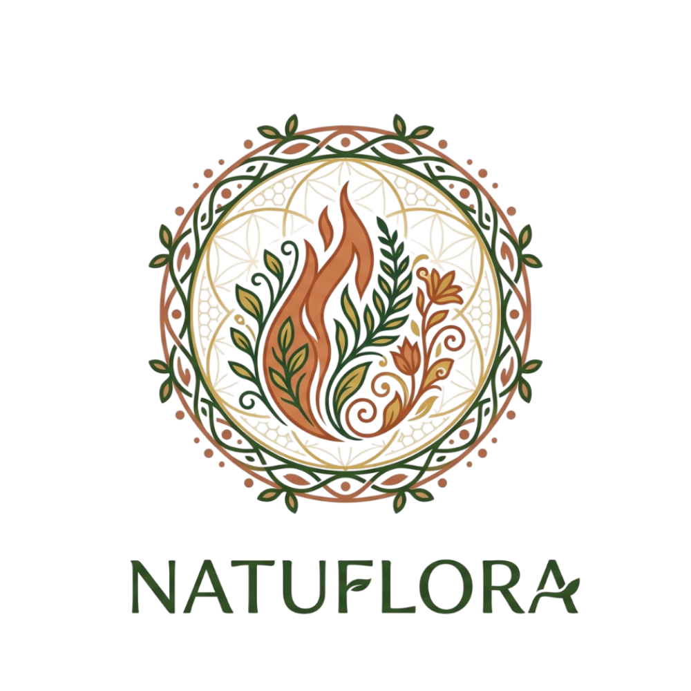
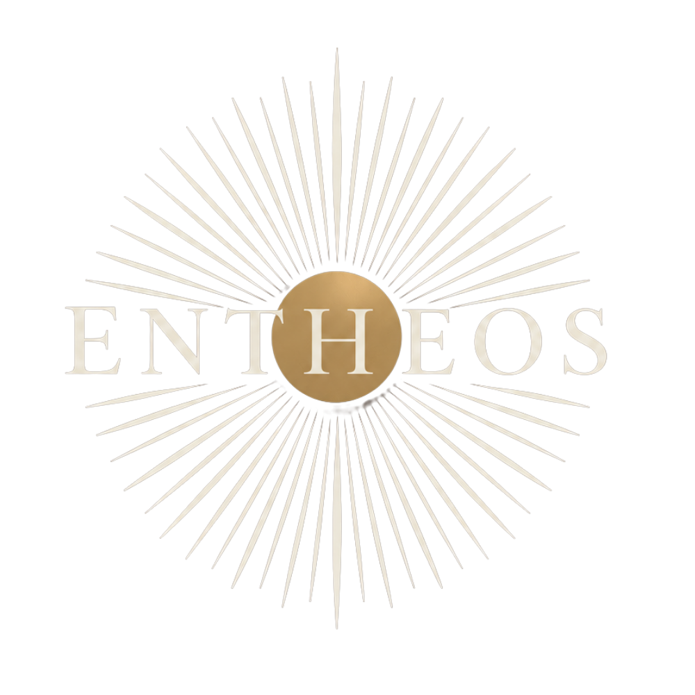

×
Redução de danos Earthdance 2026
Informação salva vidas. Cuide-se, cuide de quem esta do seu lado.
Verificador de Interações
Escolha duas substâncias para ver o nível de risco da combinação específica.
Escolha duas substâncias para ver o resultado
Dados baseados na base de combinações do TripSit (wiki.tripsit.me) — use como referência geral, não como garantia de segurança. Combinações sempre aumentam o risco.
Substâncias, Efeitos e Dosagens
Informação e Redução de Danos
Redução de Danos é uma abordagem de cuidado que parte de um princípio simples: o uso de substâncias faz parte da realidade de muitas pessoas, e nem sempre parar é possível ou é o que a pessoa quer. Por isso, a prioridade é reduzir os riscos associados a esse uso, sem julgamento, em vez de exigir abstinência como única resposta possível.
Informação de qualidade é uma das ferramentas mais poderosas de redução de danos: saber o que se está consumindo, como o corpo reage, qual a via de uso mais segura e quais combinações evitar muda diretamente o desfecho de uma experiência. Este espaço reúne, substância por substância, o que a ciência e a experiência de redução de danos já sabem — não para incentivar o uso, mas para que, se ele acontecer, aconteça com o menor dano possível.
Cuidados Preventivos
Redução de danos não é incentivo ao consumo — é cuidado real com quem já decidiu usar. Toque em um dos ícones ao lado para abrir cada tema.
Roda de Integração
O que é
Um espaço de escuta e estudo para quem viveu experiências com substâncias psicodélicas, no festival ou fora dele, e quer um lugar seguro para elaborar, compartilhar e aprender junto com outras pessoas. Não é terapia individual, é um círculo coletivo de integração e cuidado.
Objetivo
Criar continuidade para o cuidado que começa na Tenda de Redução de Danos: um espaço onde as experiências vividas no festival possam ser processadas com calma, apoio e informação de qualidade, em vez de ficarem soltas depois que a experiência acaba.
Como funciona
Encontros mensais, online, abertos ao público geral. A participação é por contribuição voluntária, sem valor fixo, e ninguém fica de fora por questão financeira.
Como participar
Preencha o formulário de inscrição com seus dados. Após o envio, nossa equipe entrará em contato com você com mais informações sobre o próximo encontro.
Inscreva-seOnde nos encontrar
Tenda de Redução de Danos — Natuflora × ENTHEOS
Testagem de substâncias · Acolhimento S.O.S. Psicodélico · Informação
Segue a gente no Instagram para acompanhar os próximos passos dessa parceria e ficar por dentro dos próximos encontros.